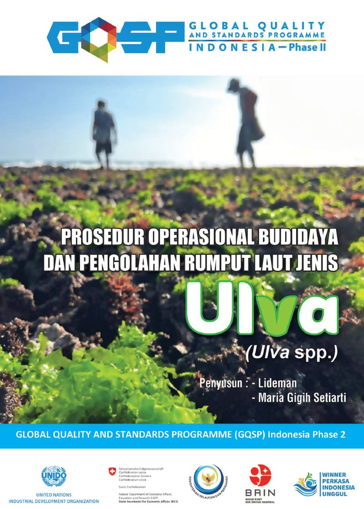
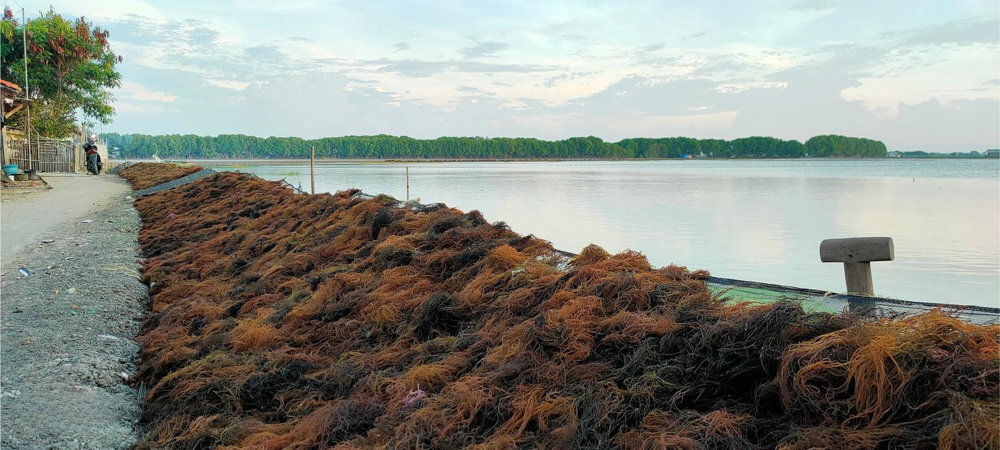
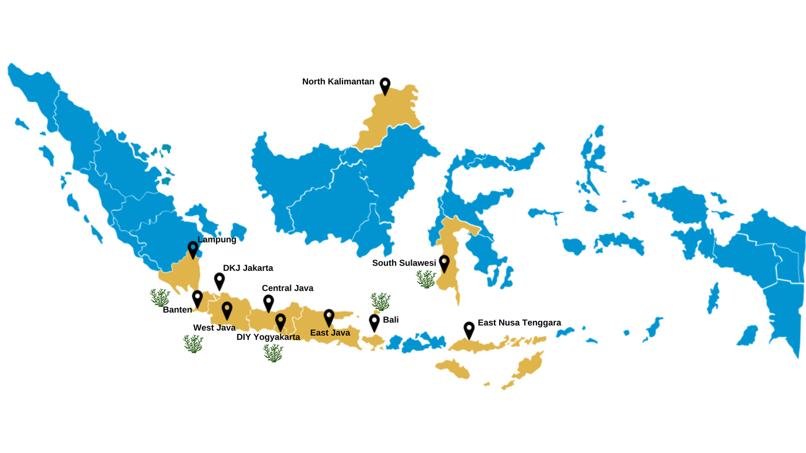
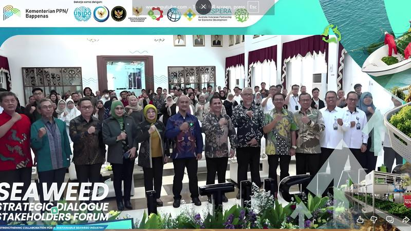
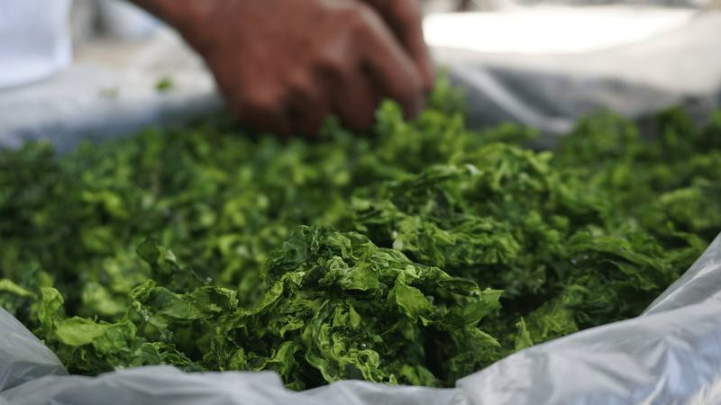
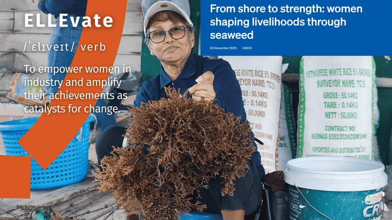

Value chains
Seaweed
With a coastline of over 90,000 km, Indonesia still has large potential for increasing seaweed production, processing, and trade. Seaweed species that are currently cultivated in Indonesia are mainly K.alvarezii, E.spinosum, andGracilaria, which are exported dried (raw materials) and in the forms of Agar and Carrageenan. While these will remain a significant market for Indonesia, the sector would need to be improved through better quality, productivity, and value addition; there is a certain need for diversification of species that can be used for higher value-added products.
While the programme continues to support the mainstream seaweed industry, it also explores and promotes new species for producing high-value products; develop Standard Operating Procedure (SOP) for new species farming; support agar and carrageenan processors to produce high value-added and new diversified products; train seaweed farmers to grow new species; and build the capacity of micro and small enterprises to comply with standard requirements and to up-scale high-value seaweed products such as bio-stimulant.
The seaweed processing industry is currently focused on the production of Agar and Carrageenan. This is expected to continue due to the comparative advantages of this industry and access to raw materials. Therefore, diversification of processing industry into new value-added products is another major transformation that the seaweed sector needs to achieve.
The Agar and Carrageenan industry is supported towards creating innovative and high-value products with significant contributions to economic development, climate change adaptation, and mitigation by promoting the use of green energy to reduce the carbon footprint of the industry.
In collaboration with Koperasi Mina Agar Makmur (KMAM) in Karawang, the programme provides support to optimize the value of waste from dried Gracilaria produced during re-drying and cleaning before it is sent to processing or for export. This will encourage seaweed farmers and traders to clean their dried seaweed to improve its quality, obtain financial benefits from the waste, and reduce waste at processing plants.
In farming, the programme focuses on new species such as Ulva sp., Caulerpa sp., and Sargassum sp.Although these species are less popular among seaweed farmers compared to Gracilaria and Cottonii, they offer numerous benefits and possess high potential for development. The programme has identified three potential locations for the pilot project: South Sulawesi, Bali, and DI Yogyakarta.
To ensure sustainability beyond the project, GQSP Indonesia has established collaborations with several partners to pilot Ulva farming, including the Center for Brackish Water Cultivation Fisheries Research and Fisheries Extension (BRPBAP3) Maros, Bank Indonesia (BI) Lombok, CV. Lars, PT. Mitra Agro Global, CV. Posko JASUDA, PT Winner Perkasa, and PT. Siwid Impact.
Development of Bio-stimulant
Recognizing the economic and environmental benefits of seaweed-based bio-stimulant, GQSP Phase 2 continues its collaboration with Koperasi Mina Agar Makmur to develop a Gracilaria & Sargassum-based bio-stimulant for application in both aquaculture and agriculture. The programme supports the co-operative to obtain necessary licenses and certificates for selling the products and up-scale production.
Supporting Family-based Ulva Processors
The increasing demand for Ulva products in Gunung Kidul, DI Yogyakarta has led to rampant exploitation of seaweed resources, unfortunately resulting in a gradual decline in Ulva populations in the area. This highlights the unsustainable nature of the current process and the need for alternative approaches that support both environmental conservation and community well-being. GQSP Indonesia, in partnership with PT. Winner Perkasa Unggul, supports family-based (MSMEs) Ulva processors in Gunung Kidul to improve processing and packaging methods to enable them to comply with standards for better market access. At the same time, Ulva farming will be promoted to ensure stable and high-quality Ulva raw materials for food products, reducing pressure on wild harvesting.

Related publications and activities


